Big Orange Crayonmusical thingsThe Stars of Rock, The Jim James Band, and the Orange Valentine's (upstairs), Albany February 8th, 2002 Wow, this was the Orange's last show. I think I counted that I hugged seven people all together. Since this was their last show, the Orange really wanted to go out with a bang and rock everyone's faces off and of course they did. They went out sounding the best that they ever did, and not many bands can claim that. The first band on for the night was The Stars of Rock, and although I came in just before their set ended, I enjoyed myself. Actually, I was spending most of the time worrying about whether or not Ariel and her friends would get in because it turned out to be an 18 and up show, which they are not. But before The Stars of Rock finished, they were allowed in, with really huge, thicker-than-usual "X"s on their hands. And again the Stars of Rock had someone dancing around in a big, quilted cat helmet. Of course. I love that! The Jim James Band played next. This was not the same Jim James that I saw play with Jonah's Onelinedrawing last year, but a different Jim James. Would have preferred the former, actually... Anyway, once the Orange came on and Creed-like opening acts were forgotten and the Valentine's became absolutely packed with people coming out to say goodbye to one of the area's best bands. They played a long, absolutely amazing set and finished with "Young Amphibians" and a group hug. Pictures: The Stars of Rock: 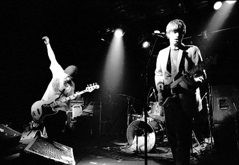 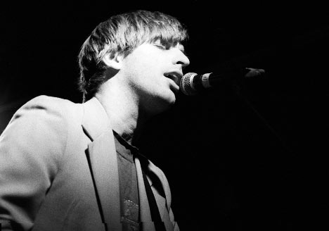 The Jim James Band: 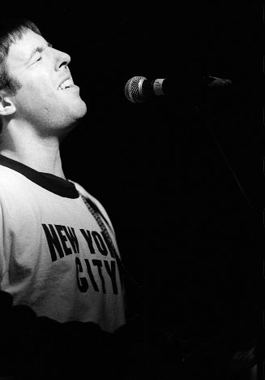 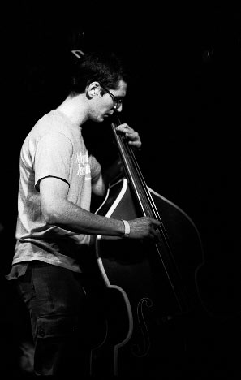 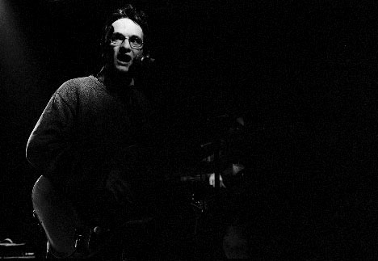 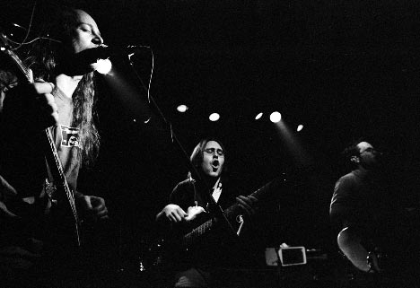 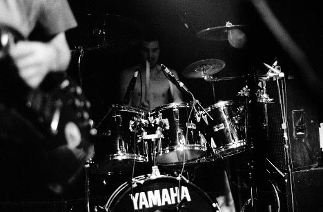 It's hard to take pictures of Dan, but that doesn't stop me from trying! 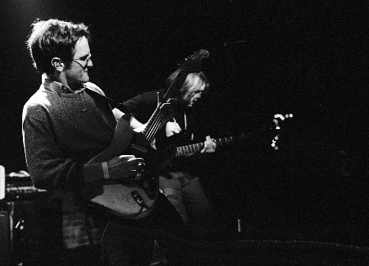 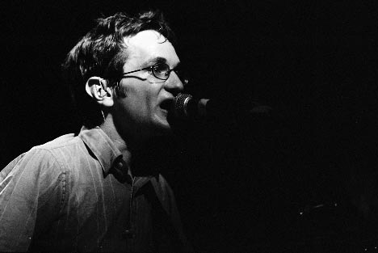 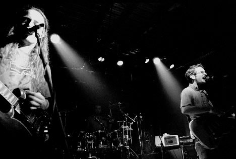 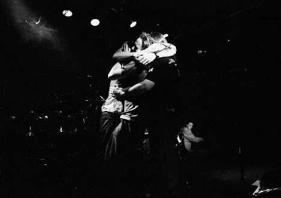 Here's a larger version of this one. You know you want it, ya softie =) Camera stuff: Body: Nikon F3HP Lenses: 24mm f2.8, 50mm f1.8, and 105mm f2.5 Nikkors Film: Fuji Neopan 1600 exposed at 3200, developed 15 and a half minutes in Rodinal (1+100) at 18 degrees (phew!) This stuff beats the shit out of Kodak's TMax p3200. Please don't use these elsewhere unless you are in one of the bands or are a nice person. |
{kind=link}